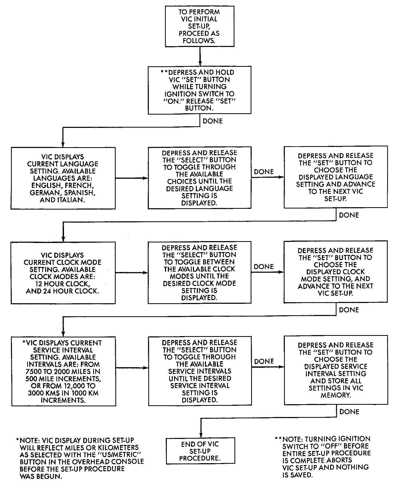
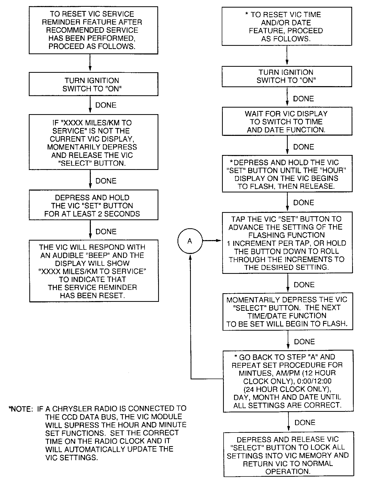

Maintenance Required Lamp/Indicator: Service and Repair
VIC Initial Set-Up:

VIC Reset:

For additional Vehicle Information Center (VIC) information refer to Driver/Vehicle Information Display. Driver/Vehicle Information Display